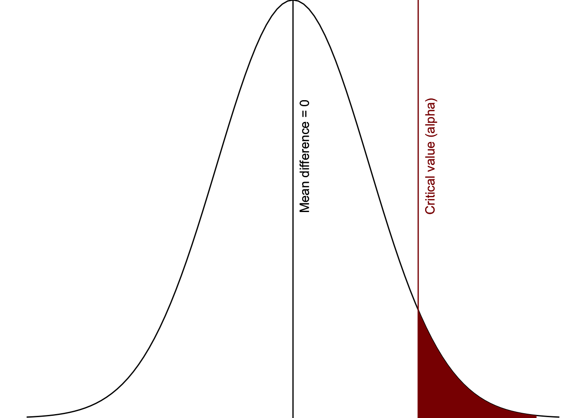
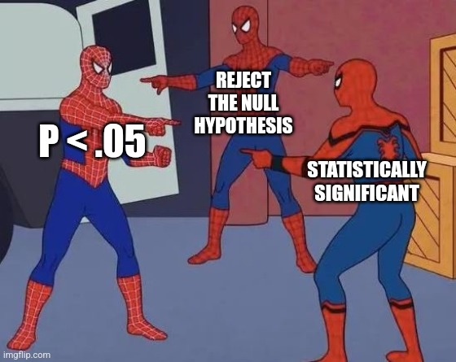

8.2 Alpha and p-values
In Chapter 7, we introduced p-values and alpha as part of hypothesis testing. In that context, p-values helped us determine whether a result was statistically significant.
In this section, we revisit these ideas and place them within the broader BEAN framework.
What are p-values?
Whereas effect sizes tell us about practical significance, they do not tell us about statistical significance. That is what p-values are for: they tell us whether our results are statistically significant or how surprising they are.
The formal definition of a p-value is that it is the probability of observing data that is as extreme or more extreme than the data you have observed, assuming the null hypothesis is true.
There are two important things to keep in mind about this definition:
- The p-value is about the probability of our data. It is not about the probability of our hypothesis.
- The p-value is based on the assumption that the null hypothesis is true.
Note
In APA style, we report the exact p-values rounded to three decimal places. In your jamovi settings, you can set the statistical significant reporting to “3dp” to satisfy APA requirements.
Another way we could think of the p-value is: assuming there is no difference (i.e., the null hypothesis is true), how surprising is our data?

Common misconceptions about p-values
You may have heard of p-values before, including some bad things. The biggest problem with p-values is that they are misunderstood, even by researchers.
Common misconceptions about p-values (by Daniel Lakens):
- A non-significant p-value means the null hypothesis is true ❌
- A significant p-value means the null hypothesis is false ❌
- A significant p-value means the effect is practically important ❌
- A significant p-value means there is only a 5% chance of being wrong ❌
These are misconceptions because p-values only tell us about the probability of our data under the null hypothesis—not whether the null or alternative hypothesis is true.
We never truly know whether the null hypothesis is true, and we can always be making a Type I or Type II error.
Note
These misconceptions come from the great work done by Daniel Lakens. You can read his blog post on the topic or take a great online course about improving your statistical inferences. He also has a great article that “The Practical Alternative to the p Value Is the Correctly Used p Value.”
Are p-values bad?
Note
Many criticisms of p-values reflect misunderstandings of what they are designed to do. They do not confirm hypotheses—they help evaluate how surprising data are under the null hypothesis.
Some researchers have argued that we should abandon p-values entirely. For example, the journal Basic and Applied Social Psychology banned their use.
However, as Lakens argues:
“The practical alternative to the p-value is the correctly used p-value.”
There is nothing inherently wrong with p-values. The problem is how they are often used and interpreted.
Note
The journal Basic and Applied Social Psychology banned the use of p-values, claiming that NHST is invalid. Instead, they want researchers to focus on effect sizes and appropriate power analyses. Although these are laudable attempts–I agree that researchers should have highly powered studies and focus more on practical significance over statistical significance–I agree more with researchers like Daniel Lakens who point out that the problem is researchers want NHST to do what it does not do. They want statistical procedures that can confirm a hypothesis, which NHST cannot do. While larger samples and a focus on effect sizes can help, we should trust NHST to do what it can do, which is to tell us about the probability of the surprisingness of our data if the null hypothesis is true. Read more about the journal’s statement here: https://www.tandfonline.com/doi/full/10.1080/01973533.2015.1012991
Alpha: What counts as “surprising”?
The p-value tells us how surprising our data are—but how surprising is surprising enough?
That is where alpha (α) comes in. Alpha determines the critical region of significance—the threshold at which we decide to reject the null hypothesis.
The alpha level represents the point at which we say:
“This result is so unlikely under the null hypothesis that we will reject it.”
Why is alpha usually .05?
The .05 threshold comes from Fisher (1925), who suggested it as a convenient cutoff (roughly 1 in 20, or about 2 standard deviations from the mean). More specifically, he said:
A deviation exceeding the standard deviation occurs about once in three trials. Twice the standard deviation is exceeded only about once in 22 trials, thrice the standard deviation only once in 370 trials…. The value for which P = .05, or 1 in 20, is 1.96 or nearly 2 ; it is convenient to take this point as a limit in judging whether a deviation is to be considered significant or not. Deviations exceeding twice the standard deviation are thus formally regarded as significant.
However, this value is largely a historical convention, not a universal rule. Basically, .05 was convenient. It was 1/20. It was around 2 standard deviations from the mean in a normal distribution. For some reason, it caught on (maybe the “formally regarded as significant” was why).
Even Fisher later argued that researchers should think critically about alpha and, in some cases, use stricter thresholds (e.g., .01).
Note
If you want to read more, this is a short read on the history of the .05 alpha level: https://www2.psych.ubc.ca/~schaller/528Readings/CowlesDavis1982.pdf
Choosing an alpha level
In this course, we typically use α = .05.
In practice, however, choosing alpha involves tradeoffs:
- Lower alpha → fewer false positives (Type I errors)
- Higher alpha → greater ability to detect effects (higher power)
If you are more concerned about false positives, you might lower alpha.
If you are more concerned about missing real effects, you might prioritize power.
Researchers should justify their alpha level rather than relying on defaults.
Note
What does this look like in practice? In a Psi Chi article by Kobza and Salter (2016), they stated, “Due to the high number of statistical tests conducted, a lower p value (.01) was used to determine significance.” (p. 75).
How do I know what alpha researchers are using?
Ideally, all researchers should be reporting their alpha values in all their publications. For example, in a Psi Chi article by Campero-Oliart and colleagues (2020), they stated, “Alpha levels for all analyses were set to .05.” (p. 47).
In reality, we typically don’t report anything and assume a default of .05 without explicitly stating so (and yes, I am also guilty of this). However, you should always be thinking critically of your alpha value and, if you are using something other than .05, you should explain what level you choose and why.
Alpha and p-values within BEAN
Within BEAN, alpha and p-values interact with the other components in important ways:
- Alpha ↔︎ Power: Lower alpha makes it harder to detect effects (reduces power)
- Alpha ↔︎ Effect size: Smaller effects are harder to detect under stricter alpha levels
- Alpha ↔︎ Sample size: Larger samples may be needed when using stricter alpha levels
Alpha is not just a threshold—it directly affects our ability to detect effects.
A practical takeaway
When interpreting results, it is not enough to ask:
“Is p < .05?”
We should also ask:
- How large is the effect?
- How much data was collected?
- Was the study sufficiently powered?
This is why p-values should always be interpreted alongside the other components of BEAN.
Videos and resources
The following video walks through some of the effect sizes, alpha, and power stuff.
You might also like this chapter or video on p-values by Daniel Lakens.
Another video recommended by a student is this one from zedstatistics on p-values.
TipCheck Your Understanding
- What does a p-value represent?
- Why is it incorrect to say a p-value is the probability that the null hypothesis is true?
- How does lowering alpha affect power?
- Why can a small effect become statistically significant with a large sample size?
- Why should p-values not be interpreted in isolation?
TipAnswers
- The probability of observing the data (or more extreme) assuming the null hypothesis is true
- Because p-values describe the probability of the data, not the hypothesis
- It decreases power, making effects harder to detect
- Because larger samples increase the ability to detect small effects
- Because they depend on effect size, sample size, and alpha